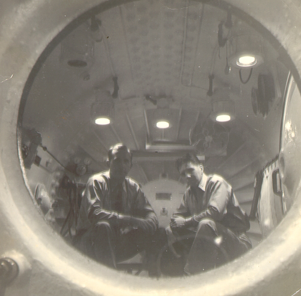

Calibrating Human Physiology
For the world's most hostile depths. Our state-of-the-art atmospheric chambers and hypoxic conditioning programmes are engineered specifically for deep-sea commercial saturation divers and extreme cold-water surfers preparing for high-pressure environmental adaptations.
Operating in extreme conditions requires more than basic physical fitness; it demands fundamental cellular restructuring. When personnel deploy to commercial oil rigs in the North Sea or undertake saturation diving assignments exceeding 200 metres, their survival depends directly on how their bodies manage oxygen depletion and carbon dioxide accumulation. We simulate exact barometric conditions found at altitudes up to 6,000 metres within secure, hermetically sealed hyperbaric chambers. Over carefully calibrated 12-week residencies, we force the human body to increase natural erythropoietin synthesis, expanding absolute red blood cell volume and radically improving the efficiency of oxygen transport to muscle tissue and the brain.

Why Apex Altitude Matters
Accelerated Acclimatisation
Reduce deployment delays by weeks, not days. Commercial diving operations frequently stall because personnel require extended periods to acclimatise to changing barometric pressures. Our intermittent hypoxic exposure protocols force rapid cellular adaptation, delivering equivalent erythropoietin uplift within the first 72 hours of residency. By carefully regulating the fraction of inspired oxygen, we provoke an immediate physiological response without risking acute mountain sickness or compromising immune function. Your operatives arrive on-site fully mission-ready, cutting logistical overheads and drastically reducing the non-operational time spent waiting for natural biological adjustments to catch up with commercial requirements.
Neuro-Cognitive Resilience
Maintain critical decision-making capabilities under severe hypoxic stress. The most dangerous aspect of extreme depth or high-altitude operations is not physical exhaustion, but the insidious onset of cognitive decline. Our neurocognitive stress battery builds genuine tolerance to oxygen depletion, preserving spatial awareness, complex problem-solving abilities, and reaction time when these faculties are most needed. We subject candidates to intensive mathematical and motor-function testing while gradually lowering their oxygen saturation to 80 percent, conditioning the brain to operate clearly and rationally despite restricted cerebral blood flow, thereby preventing catastrophic human error in highly volatile commercial environments.
Biometric Sleep Optimisation
Recovery is weaponised, not left to chance. Our polysomnography-integrated monitoring tracks nocturnal oxygen saturation and rapid eye movement cycles, using this data to calibrate your chamber protocol and actively repair micro-trauma during downtime. Each residency bedroom is equipped with clinical-grade sensors that measure electroencephalography data, respiration rates, and peripheral capillary oxygen saturation continuously throughout the night. If an operative experiences detrimental apnoea events or fails to reach deep, restorative slow-wave sleep phases, our clinical technicians immediately adjust the ambient room pressure and oxygen mix to ensure complete physiological recovery before the next day of rigorous conditioning begins.
Adaptive Hypercapnic Training
Carbon dioxide tolerance separates competent divers from elite operators. When breathing systems fail or physical exertion spikes at depth, the accumulation of carbon dioxide triggers an overwhelming psychological panic response before actual oxygen starvation occurs. Our controlled rebreathing protocols systematically desensitise the ventilatory response, extending your window of operational calm at extreme depths. Over the course of 40 individual sessions, we expose candidates to steadily increasing fractional concentrations of carbon dioxide, training the central nervous system to ignore the urge to hyperventilate. This protocol grants divers critical additional minutes to assess equipment failures and execute emergency procedures with a steady heart rate.
Facility Showcase
Our Northern Sea facility spans 14,000 square metres of heavily reinforced, climate-controlled testing zones. From the hyperbaric sleeping quarters to the hydrostatic testing pools, every corner of the laboratory is wired with continuous biometric telemetry. We maintain three commercial-grade multi-place chambers capable of accommodating up to twelve operatives simultaneously, supported by on-site haematology labs and a dedicated sports cardiology wing. This infrastructure ensures absolute precision during every phase of the physiological calibration process.


Core Diagnostics & Conditioning
The architecture of our 12-week residency is built upon strict clinical protocols rather than generic fitness advice. Every candidate undergoes exhaustive baseline testing to determine their precise metabolic fingerprint before they even step into a chamber. From blood lactate profiling to continuous cardiovascular monitoring, our conditioning stack guarantees measurable, verified improvements in absolute aerobic capacity, erythropoietin secretion, and overall physiological durability under environmental stress.
- Intermittent Hypoxic Exposure (IHE): Short, intense intervals of low-oxygen air (9.5–12% FiO2) to stimulate EPO production and trigger the HIF-1α signalling cascade responsible for systemic cellular adaptation. We employ active ventilation masks tied directly to our central blending manifold, allowing real-time adjustments of the gas mix based on the candidate's live capillary oxygen readings.
- Polysomnography (PSG) Integration: Clinical-grade 16-channel sleep tracking to monitor vital restorative phases, N3 slow-wave depth, and nocturnal oxygen desaturation events across every night of residency. Data is analysed by board-certified sleep technologists each morning to direct dietary interventions and adjust the subsequent day's training volume.
- VO2 Max & Lactate Threshold Testing: Precision metabolic baseline establishment using breath-by-breath gas exchange analysis at sea level, 3,000m, and 5,000m simulated altitudes. This testing isolates the exact heart rate zones where lactic acid begins to accumulate rapidly, allowing us to build precise, individualised endurance profiles.
- Custom Nutritional Programming: Macronutrient periodisation synced to your altitude exposure schedule, with targeted heme iron, folate, and B12 supplementation for optimal erythropoiesis support. Meals are prepared on-site by clinical dietitians to ensure strict compliance with the biochemical demands of rapid red blood cell generation.
- Continuous Pulse Oximetry: 24-hour SpO2 monitoring via wearable devices, with automated clinical alerts triggered below your individually calibrated desaturation thresholds. This constant oversight prevents accidental overtraining and protects the cardiovascular system from dangerous hypoxic load spikes.
- Neurocognitive Stress Battery: Reaction time, spatial awareness, and decision-making assessments conducted under graded hypoxic conditions to quantify and build cognitive resilience. We utilise proprietary software to measure millisecond delays in executive function, forcing candidates to maintain focus despite physiological alarm signals.
Ready for the Extremes?
Do not leave your physiological adaptation to chance. Secure your diagnostic assessment today and begin the conditioning programme trusted by the world's most demanding operational environments. Our clinical coordinators will respond within 24 hours to schedule your initial baseline screening and arrange secure transport to the facility.
Book Your Assessment